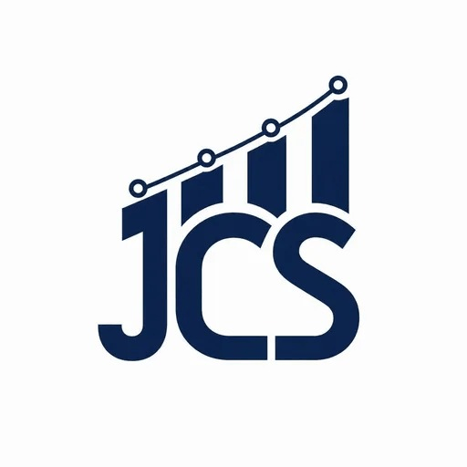
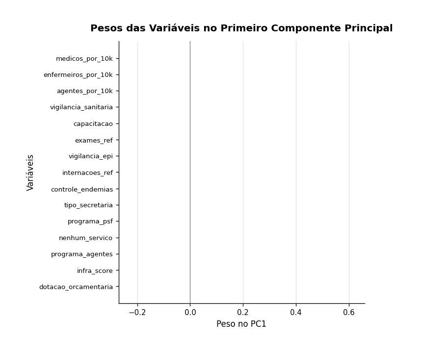
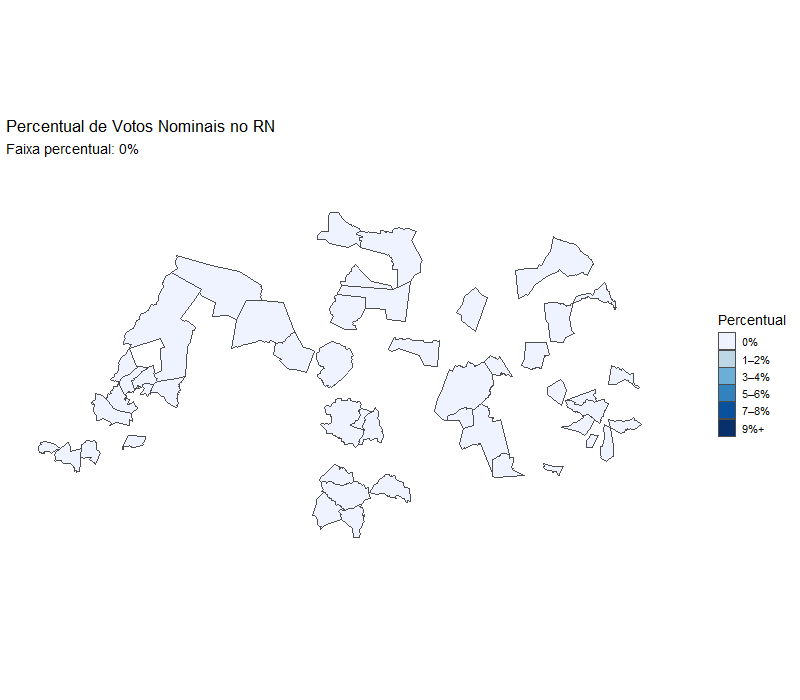
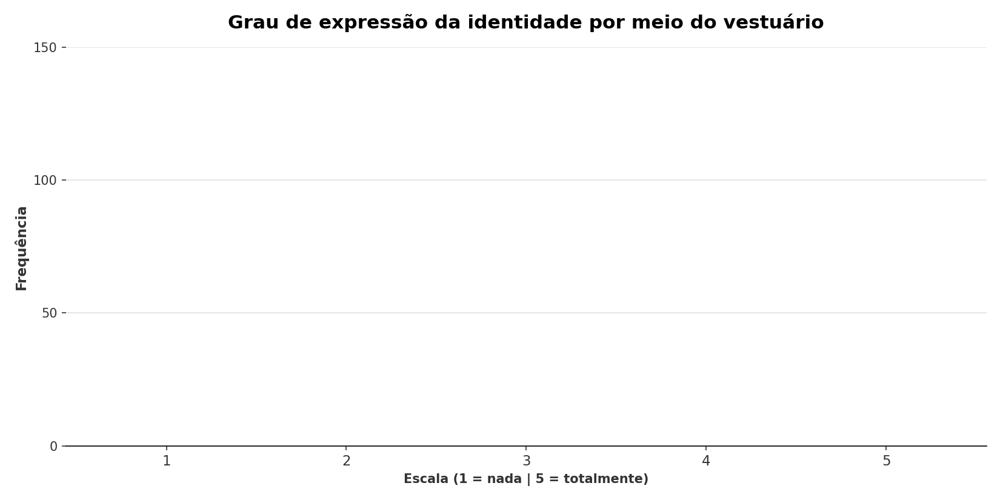
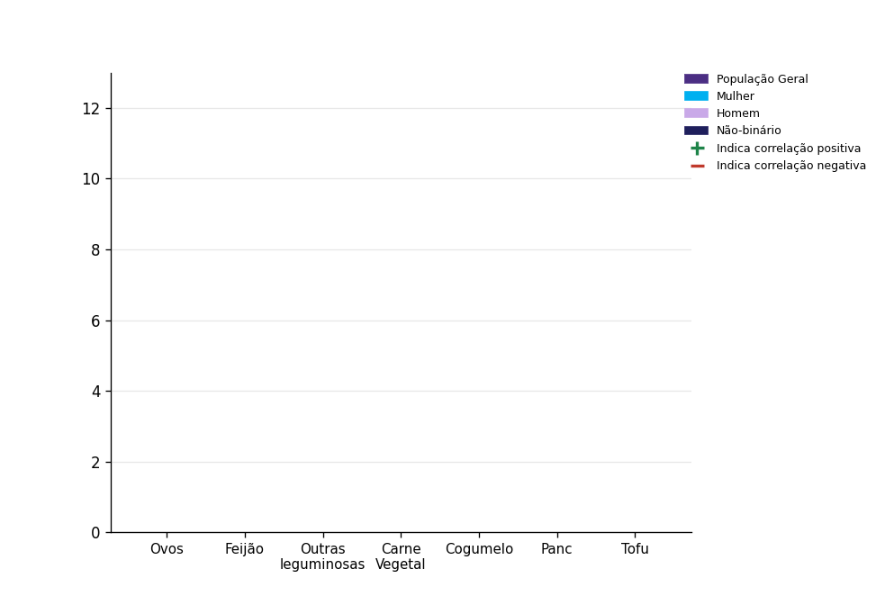

01 · Estatística
Análises Estatísticas
Testes de hipótese, regressões, séries temporais...

Modelagem estatística, machine learning e manipulação de bancos de dados para pesquisas baseadas em evidências.
Somos uma consultoria formada por cientistas sociais e analistas de dados com atuação em pesquisa acadêmica. Combinamos estatística, programação e metodologia científica para transformar bases de dados em informação estratégica, sempre com processo documentado e reprodutível.
Entendemos a pergunta real por trás do pedido e avaliamos se os dados disponíveis sustentam a resposta.
Definimos método, prazo e entregas por escrito.
Tratamento de dados, modelagem e validação, com encontros periódicos para você acompanhar.
Relatório, visualizações e apresentação dos resultados em linguagem acessível.
Testes de hipótese, regressões, séries temporais...
Segmentação de público, detecção de padrões...
Apoio no desenho metodológico, amostragem...
Construção, limpeza e estruturação de bases de dados.

Construção de um índice a partir do banco de dados da MUNIC para a classificação das capacidades estatais dos municípios do Rio Grande do Norte.

Visualização geoespacial da distribuição de votos, usada como apoio de análise para cobertura jornalística.

Tabulação e visualização de escala Likert (n=375) para pesquisa de Ciências Sociais sobre consumo e identidade.

Caracterização do perfil socioeconômico das pessoas que reduziram o consumo de carne no Brasil

Artigos, capítulos e relatórios técnicos produzidos pela equipe. Cada entrada traz um resumo e o link de acesso ao texto completo.
Primeira investigação científica focada em flexitarianos brasileiros, com o objetivo de caracterizar seus perfis socioeconômicos e demográficos, as motivações para a adoção do flexitarianismo, a frequência de consumo de carne de origem animal e os principais substitutos de carne que consomem.
Análise de 989 indivíduos brasileiros identificados como flexitarianos para explorar a relação entre gênero, orientação sexual e o comportamento de redução do consumo de carne, avaliando simultaneamente o impacto das motivações que levam os indivíduos a adotar esse modelo alimentar.
Informe sua demanda e retornamos com um diagnóstico inicial.